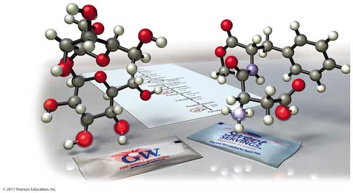
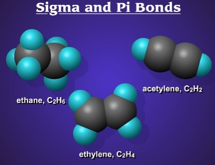
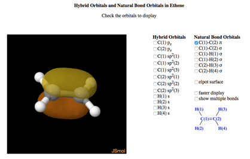

Chapter 10—Chemical Bonding II: Molecular Geometry

Chapter 10 powerpoint notes.
Simulations
Chemical bonding
Explore the interactions between various combinations of two atoms. Observe the the total force acting on the atoms or the individual attractive and repulsive forces. Customize the attraction to see how changing the atomic diameter and interaction strength affects the interaction.

| Click to Run |
Molecular geometry (basics)
Explore molecule shapes by building molecules in 3D! Find out how a molecule's shape changes as you add atoms to a molecule.

| Click to Run |
Molecular geometry
Explore molecule shapes by building molecules in 3D! How does molecule shape change with different numbers of bonds and electron pairs? Find out by adding single, double or triple bonds and lone pairs to the central atom. Then, compare the model to real molecules!

| Click to Run |
Molecular polarity
When is a molecule polar? Change the electronegativity of atoms in a molecule to see how it affects polarity. See how the molecule behaves in an electric field. Change the bond angle to see how shape affects polarity.

| Click to Run |
A review of hybridization theory (Khan Academy)
This is a nice series of videos that goes through the hybridizations: sp3, sp2, and sp—with particular relevance to organic molecules.
Sigma and pi bonds - animation

Explore the bonding in: methane, ethylene, and acetylene! You can display the hybrid orbitals and see how the bonds are made. Very cool!
